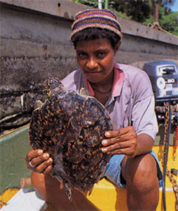

|
|
第３９ 高砂義勇兵（台湾出身の兵士）
台湾は第二次大戦まで日本の領土であった。先の第二次大戦で、いよいよ日本人だけでは戦力が不足して来たので台湾から
志願兵を募集し出来上がったのが、高砂義勇軍であります。そんな折り、私は昭和１７年１２月、ラバウルに上陸し、東部ニ
ユーギニア戦線に侵攻してから一年半が過ぎていました。が、高砂義勇兵が東部ニユーギニアの戦場に来ていることは知りま
せんでした。時が過ぎ昭和１９年になってからは、誰の目にも敗戦は色濃くなって来ました。噂によると、猛軍は遥か後方の
ホウランジャに集結し、そこからジャバに行き、ジャバで休養し、体力を回復してから日本に帰国すると言う。こんな嬉しい
噂を聞くと、急に元気も出てきますので不思議なものです。
昭和１９年３月になってから、私どもはホウランジャ（ジャヤプラ）に向かってマダンを出発し、ハンサまで転進して来ま
した。ハンサ湾の海の向こうにハンサ富士が今日もまた、美しい姿を見せていました。ハンサのジァングルの中の小道を、裸
足で我々を追い越して行く兵隊がいます。彼等は銃を肩で横に担ぎ、軍靴はキチンと背曩の上に縛り付けている。この兵隊こ
そが高砂義勇兵だったのです。初めて見ました。誠に精悍で頼もしく思われました。
一方、日本兵は栄養失調で健康が悪く、全員が病弱兵そのものでした。それに比べ、高砂義勇兵は堂々とした体躯で、いま
だに健康で、その姿が羨ましかった。彼等は簡単にヤシの木に登って、ヤシの実がとれます。が、我々はそんな事はできない
のです。ヤシ林は海岸線に沿って何処までも植林してある。ヤシの実は脂肪分があって、これさえ食べておれば、栄養失調に
はならないですむと思われるが、ヤシの実を取れないので残念でした。

このヤシ林はドイツが統治していたとき、植林したという。因みに、ラバウルとはドイツ語読みであり、英語読みならラボ
ールである。現地人はドイツ人を尊敬していました。高砂義勇兵にとっては、台湾はニユーギニアと気候風土が似ているので、
生活に何の不自由も感じないのであろう。羨ましいと思いました。
彼等は裸足で足音を立てないで、敵に近付く事が出来たので、戦闘の激しかったラエの戦場では大変な武功を立てたという。
残念な事に肩章を付けていないので、身分は分からなかった。強いなあ！という印象が強く残っています。
話は代わって、終戦後３０数年たってから、１人の高砂義勇兵が東部ニユーギニアから台湾に生還した、というニユースが
毎日新聞の片隅に小さく載っていた。戦後３０数年たってから台湾に凱旋したが、彼の妻は夫は戦死したものと思い、再婚し
て子供も出来ていた。その事を知った彼は、自分の人生に嫌気をさし、毎日酒におぼれ、生還してから５年もたたないうちに
死んだ、と書いてあった。
日本兵の横田さん、小野田さんも戦後数十年たってから日本に生還した。
注：高砂義勇兵はかなりの確率で 中村輝夫 のことだと思われます。チャットＧＰＴ
|